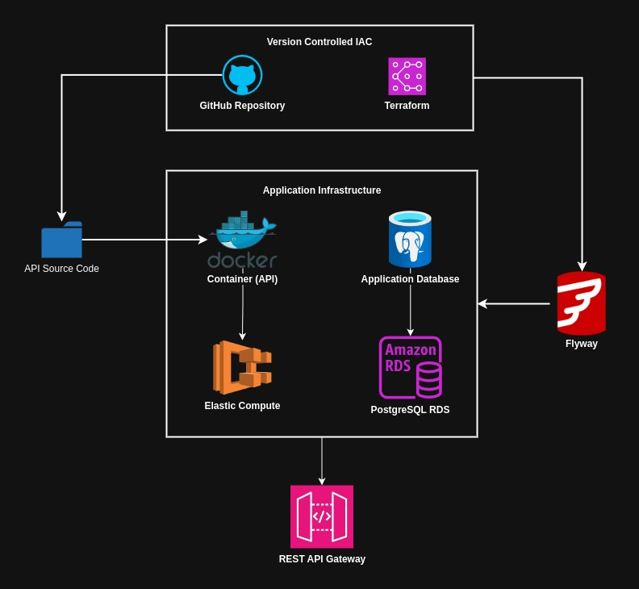

Application Service Module¶
- General module for deploying infrastructure for new "full stack" applications.
- Deployment for infrastructure is separated between home development server and AWS cloud infrastructure. Github actions will deploy to both environments.
- Base infrastructure requires a postgres deployment, a public registry to push docker containers to, and network setup on the AWS side.
On Premises¶
| Component | Description |
|---|---|
| Docker Registry | Local docker registry hosted on server, all application docker images are pushed to this registry and pulled down during app deployment |
| Postgres Deployment | A postgres database cluster needs to exist in order for applications to create databases on it. Deployment is mimimal with no networking setup and regular username and password authentication for now. |
| API Source Code Container | All application source code is docker containerized and depends on the local registry existing so that the application source code can be pushed to it. |
Container Service Orchestration¶

- ECS Cluster: ECS cluster hosts all container app services, ECS task execution role is attached to cluster to allow tasks to be executed for each container
- App Service: App service is deployed within the ECS cluster, pulls container from ECR, then creates a ECS service with a task definition, task definition hosts on port 80/443 for web traffic. Logging is enabled which will log to a corresponding cloudwatch group for monitoring.
Application Service Architecture¶

- Infrastructure for managing deployments on the on premises server (ubuntu home server) will be version controlled in GitHub with terraform templates/modules
- Terraform modules will manage docker containers and the application database (postgreSQL). Pushing API source code to the docker container might also be managed by terraform
- The application database migrations will be done using Flyway to keep track of all schema changes/database management.
On Premise Container Registry¶

- Hosting a container registry on home server for development and staging of applications before going to production AWS account
- Container registry will have 2 volumes, primary and second volumes for backup recovery and application migrations.
- Registry will have a namespace organization mechanism,
apifor rest API's,sitefor front end application source code,modelfor machine learning models
Cloud Application Service¶

- Infrastructure for managing deployments to AWS account will be version controlled in GitHub with terraform templates/modules, authorized to deploy to AWS using open ID connect role.
- Terraform will manage an AWS stack that contains docker containers on ECS and postgreSQL databases using RDS. Each application will contain this stack of resources.
- The application database migrations will be done using Flyway to keep track of all schema changes/database management.
Features¶
| Feature Alias | Description |
|---|---|
| Application database module | Module for creating postgres database infrastructure and local docker container for development. |
| REST service module | Module for deploying REST API's. Includes container deployment for API source code with AWS and home server. |
| Client side module | Module for hosting infrastructure needed for front end web applications. Includes deployment to S3 for cloud storage and home server docker container. |